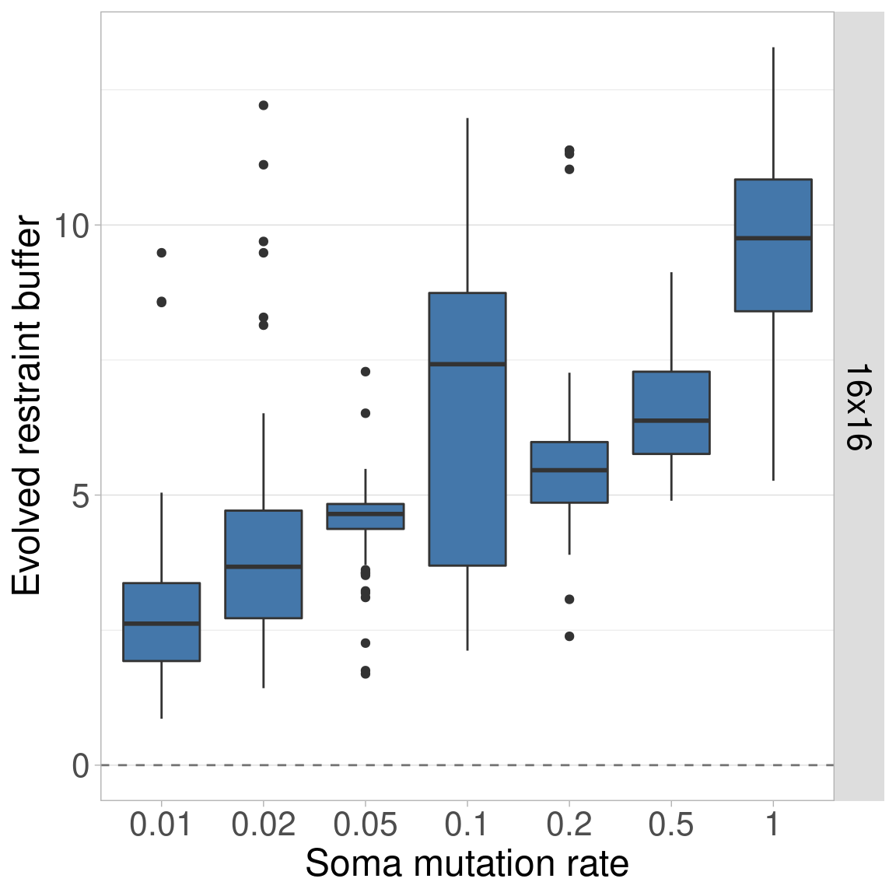
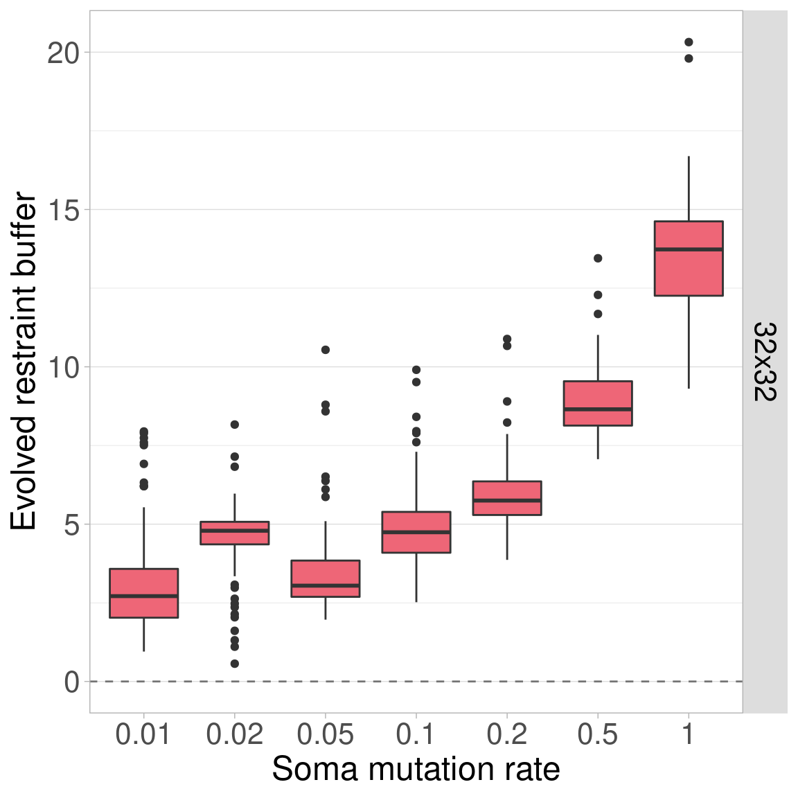
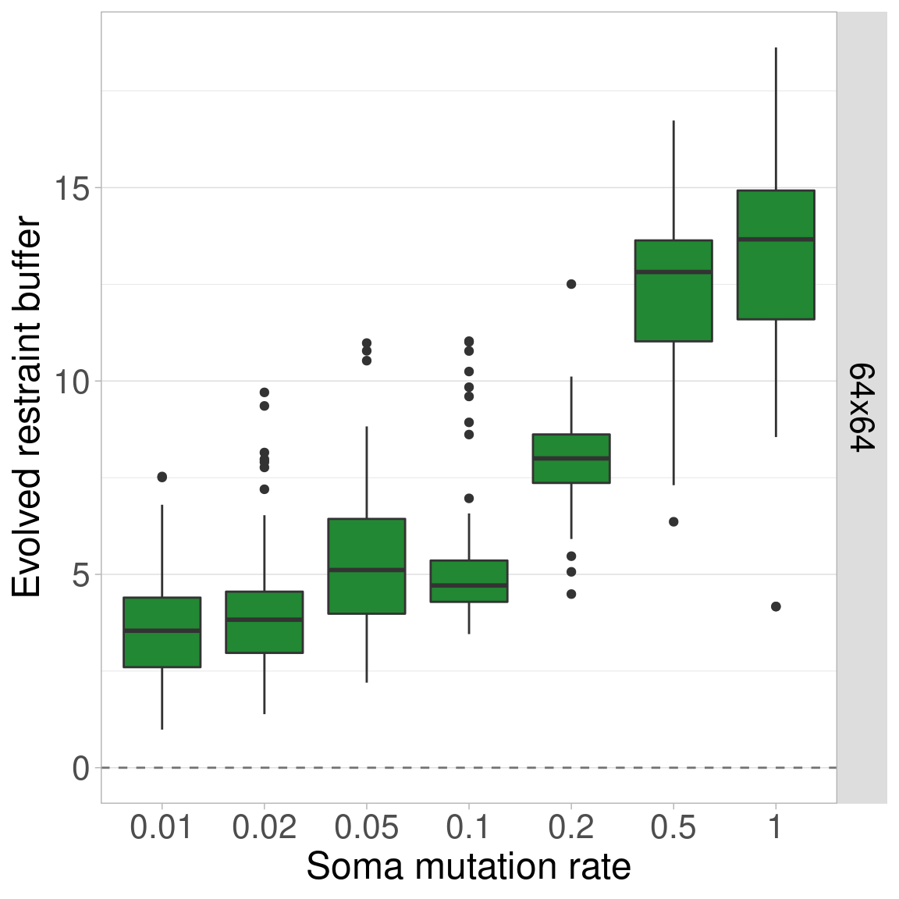
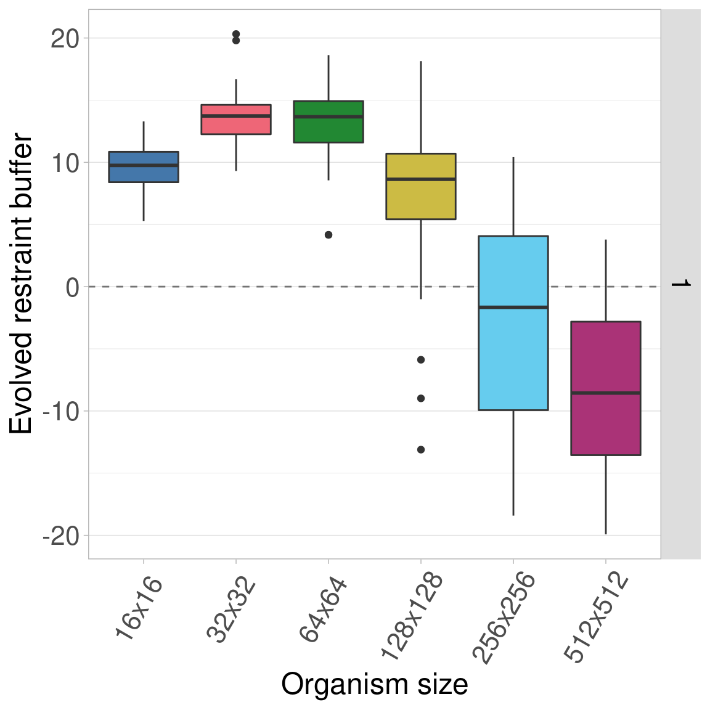

Section 3 Somatic Mutation Rate Sweep
This was one of the preliminary experiments we conducted to find the default parameters for Primordium. However, the data shown here were ran after the system was finalized (with new random number seeds). There were no qualitative differences from prior results.
Here, we vary the somatic mutation rate, which is the probability that cell replication will result in a mutation to the offspring’s genome. The probability of a mutation is per-genome, not per-bit. When a somatic mutation occurs, only a change of +/-1 is possible in the restraint value. We settled on a somatic mutation rate of 0.5 (i.e., each cell replication has a 50% chance of mutation).
The configuration script and data for the experiment can be found under 2021_02_27__soma_mut_fin/ in the experiments directory of the git repository.
3.1 Data cleaning
Load necessary libraries
library(dplyr)
library(ggplot2)
library(ggridges)
library(scales)
library(khroma)Load the data and trim include only the final generation data for sizes 16x16 to 512x512.
# Load the data
df = read.csv('../experiments/2021_02_27__soma_mut_fin/evolution/data/scraped_evolution_data.csv')
# Trim off NAs (artifacts of how we scraped the data) and trim to only have gen 10,000
df2 = df[!is.na(df$MCSIZE) & df$generation == 10000,]
# Ignore data for size 8x8 and 1024x1024
df2 = df2[df2$MCSIZE != 8 & df2$MCSIZE != 1024,]We group and summarize the data to ensure all replicates are present.
# Group the data by size and summarize
data_grouped = dplyr::group_by(df2, MCSIZE, CELLMUT)
data_summary = dplyr::summarize(data_grouped, mean_ones = mean(ave_ones), n = dplyr::n())## `summarise()` has grouped output by 'MCSIZE'. You can override using the `.groups` argument.We clean the data and create a few helper variables to make plotting easier.
# Calculate restraint value (x - 60 because genome length is 100 here)
df2$restraint_value = df2$ave_ones - 60
# Make a nice, clean factor for size
df2$size_str = paste0(df2$MCSIZE, 'x', df2$MCSIZE)
df2$size_factor = factor(df2$size_str, levels = c('16x16', '32x32', '64x64', '128x128', '256x256', '512x512', '1024x1024'))
df2$size_factor_reversed = factor(df2$size_str, levels = rev(c('16x16', '32x32', '64x64', '128x128', '256x256', '512x512', '1024x1024')))
df2$soma_mut_str = paste('soma CELLMUT', df2$CELLMUT)
df2$mut_factor = factor(df2$CELLMUT, levels = c(0.01, 0.02, 0.05, 0.10, 0.20, 0.50, 1.00))
data_summary$size_str = paste0(data_summary$MCSIZE, 'x', data_summary$MCSIZE)
data_summary$size_factor = factor(data_summary$size_str, levels = c('16x16', '32x32', '64x64', '128x128', '256x256', '512x512', '1024x1024'))
data_summary$soma_mut_str = paste('soma CELLMUT', data_summary$CELLMUT)
data_summary$mut_factor = factor(data_summary$CELLMUT, levels = c(0.01, 0.02, 0.05, 0.10, 0.20, 0.50, 1.00))
# Create a map of colors we'll use to plot the different organism sizes
color_vec = as.character(khroma::color('bright')(7))
color_map = c(
'16x16' = color_vec[1],
'32x32' = color_vec[2],
'64x64' = color_vec[3],
'128x128' = color_vec[4],
'256x256' = color_vec[5],
'512x512' = color_vec[6],
'1024x1024' = color_vec[7]
)
# Set the sizes for text in plots
text_major_size = 18
text_minor_size = 16 3.2 Data integrity check
Now we plot the number of finished replicates for each treatment to make sure all data are present.
Each row shows a different somatic mutation rate.
Each bar/color shows a different organism size.

3.3 Aggregate plots
3.3.1 Facet by somatic mutation rate
Here we plot all the data at once. Each row showing a different somatic mutation rate and each boxplot shows a given organism size.
Here we plot the same data, only we allow the y-axis to vary between rows.
3.3.2 Facet by organism size
Next, we plot the same data, but this time each row corresponds to a certain organism size, while somatic mutation rate changes along the x-axis.
Again, we replot the same data but allow the y-axis to vary between rows.
3.4 Single organism size plots
Here we plot each organism size independently, with the somatic mutation rate on the x-axis.
3.4.1 Organism size 16x16

3.4.2 Organism size 32x32

3.4.3 Organism size 64x64

3.4.4 Organism size 128x128
3.4.5 Organism size 256x256
3.4.6 Organism size 512x512
3.5 Single somatic mutation rate plots
Here we plot each somatic mutation rate independently, with organism size varying on the x-axis.
3.5.1 Somatic mut. rate 0.01
3.5.2 Somatic mut. rate 0.02
3.5.3 Somatic mut. rate 0.05
3.5.4 Somatic mut. rate 0.1
3.5.5 Somatic mut. rate 0.2
3.5.6 Somatic mut. rate 0.5
3.5.7 Somatic mut. rate 1.0

3.6 Statistics
Since organism size is our main point of comparison, we calculate statistics for each somatic mutation rate.
First, we perform a Kruskal-Wallis test across all organism sizes to indicate if variance exists at that mutation rate. If variance exists, we then perform a pairwise Wilcoxon Rank-Sum test to show which pairs of organism sizes significantly differ. Finally, we perform Bonferroni-Holm corrections for multiple comparisons.
mut_vec = c(0.01, 0.02, 0.05, 0.1, 0.2, 0.5, 1)
df_kruskal = data.frame(data = matrix(nrow = 0, ncol = 4))
colnames(df_kruskal) = c('soma_mut_rate', 'p_value', 'chi_squared', 'df')
for(mut_rate in mut_vec){
df_test = df2[df2$CELLMUT == mut_rate,]
res = kruskal.test(df_test$restraint_value ~ df_test$MCSIZE, df_test)
df_kruskal[nrow(df_kruskal) + 1,] = c(mut_rate, res$p.value, as.numeric(res$statistic)[1], as.numeric(res$parameter)[1])
}
df_kruskal$less_0.01 = df_kruskal$p_value < 0.01
print(df_kruskal)## soma_mut_rate p_value chi_squared df less_0.01
## 1 0.01 2.661659e-25 125.0566 5 TRUE
## 2 0.02 4.808020e-19 95.4471 5 TRUE
## 3 0.05 1.142677e-63 304.3847 5 TRUE
## 4 0.10 3.945761e-64 306.5323 5 TRUE
## 5 0.20 4.924029e-79 375.7743 5 TRUE
## 6 0.50 5.011460e-85 403.5832 5 TRUE
## 7 1.00 5.474947e-99 468.3229 5 TRUEWe see that significant variation exists within each mutation rate, so we perform pairwise Wilcoxon tests on each to see which pairs of sizes are significantly different.
size_vec = c(16, 32, 64, 128, 256, 512)
mut_vec = c(0.01, 0.02, 0.05, 0.1, 0.2, 0.5, 1)
for(mut_rate in mut_vec){
df_test = df2[df2$CELLMUT == mut_rate,]
df_wilcox = data.frame(data = matrix(nrow = 0, ncol = 6))
colnames(df_wilcox) = c('mut_rate', 'size_a', 'size_b', 'p_value_corrected', 'p_value_raw', 'W')
for(size_idx_a in 1:(length(size_vec) - 1)){
size_a = size_vec[size_idx_a]
for(size_idx_b in (size_idx_a + 1):length(size_vec)){
size_b = size_vec[size_idx_b]
res = wilcox.test(df_test[df_test$MCSIZE == size_a,]$restraint_value, df_test[df_test$MCSIZE == size_b,]$restraint_value, alternative = 'two.sided')
df_wilcox[nrow(df_wilcox) + 1,] = c(mut_rate, size_a, size_b, 0, res$p.value, as.numeric(res$statistic)[1])
}
}
df_wilcox$p_value_corrected = p.adjust(df_wilcox$p_value_raw, method = 'holm')
df_wilcox$less_0.01 = df_wilcox$p_value_corrected < 0.01
print(paste0('Somatic mutation rate: ', mut_rate))
print(df_wilcox)
}## [1] "Somatic mutation rate: 0.01"
## mut_rate size_a size_b p_value_corrected p_value_raw W less_0.01
## 1 0.01 16 32 9.390497e-01 4.695249e-01 4703.5 FALSE
## 2 0.01 16 64 2.988154e-04 3.735192e-05 3312.0 TRUE
## 3 0.01 16 128 7.079843e-01 2.359948e-01 4514.5 FALSE
## 4 0.01 16 256 2.034819e-12 1.453442e-13 1974.5 TRUE
## 5 0.01 16 512 4.368517e-15 2.912344e-16 1653.0 TRUE
## 6 0.01 32 64 1.074876e-02 1.535537e-03 3703.0 FALSE
## 7 0.01 32 128 9.390497e-01 7.176323e-01 4851.5 FALSE
## 8 0.01 32 256 8.111610e-09 8.111610e-10 2485.5 TRUE
## 9 0.01 32 512 1.748038e-11 1.456698e-12 2102.5 TRUE
## 10 0.01 64 128 1.074876e-02 1.601365e-03 6292.0 FALSE
## 11 0.01 64 256 1.397091e-02 2.794183e-03 3776.0 FALSE
## 12 0.01 64 512 7.748038e-05 8.608931e-06 3178.5 TRUE
## 13 0.01 128 256 3.676583e-09 3.342348e-10 2428.5 TRUE
## 14 0.01 128 512 2.110112e-12 1.623163e-13 1980.5 TRUE
## 15 0.01 256 512 2.266729e-01 5.666822e-02 4219.5 FALSE
## [1] "Somatic mutation rate: 0.02"
## mut_rate size_a size_b p_value_corrected p_value_raw W less_0.01
## 1 0.02 16 32 3.611494e-05 4.012771e-06 3112.5 TRUE
## 2 0.02 16 64 4.740405e-01 4.740405e-01 4706.5 FALSE
## 3 0.02 16 128 2.648393e-01 5.296786e-02 4207.5 FALSE
## 4 0.02 16 256 6.698428e-07 5.582024e-08 2776.5 TRUE
## 5 0.02 16 512 4.142268e-11 2.761512e-12 2139.0 TRUE
## 6 0.02 32 64 1.240992e-05 1.240992e-06 6985.0 TRUE
## 7 0.02 32 128 2.150816e-02 3.584693e-03 6192.5 FALSE
## 8 0.02 32 256 3.993493e-01 9.983733e-02 4326.0 FALSE
## 9 0.02 32 512 1.117168e-04 1.396459e-05 3221.5 TRUE
## 10 0.02 64 128 4.025666e-01 2.012833e-01 4476.5 FALSE
## 11 0.02 64 256 5.648464e-06 5.134967e-07 2944.5 TRUE
## 12 0.02 64 512 6.120346e-11 4.371676e-12 2165.5 TRUE
## 13 0.02 128 256 3.129242e-04 4.470345e-05 3329.0 TRUE
## 14 0.02 128 512 1.760116e-08 1.353935e-09 2519.0 TRUE
## 15 0.02 256 512 3.993493e-01 1.013587e-01 4329.0 FALSE
## [1] "Somatic mutation rate: 0.05"
## mut_rate size_a size_b p_value_corrected p_value_raw W less_0.01
## 1 0.05 16 32 8.163575e-15 9.070638e-16 8290.5 TRUE
## 2 0.05 16 64 1.254683e-03 4.182276e-04 3555.5 TRUE
## 3 0.05 16 128 2.819711e-09 5.639421e-10 2462.0 TRUE
## 4 0.05 16 256 1.007639e-23 8.396990e-25 791.0 TRUE
## 5 0.05 16 512 3.169326e-24 2.437943e-25 742.5 TRUE
## 6 0.05 32 64 9.865308e-14 1.409330e-14 1850.0 TRUE
## 7 0.05 32 128 9.672216e-22 8.792924e-23 978.5 TRUE
## 8 0.05 32 256 4.456762e-26 3.183402e-27 576.5 TRUE
## 9 0.05 32 512 1.225797e-27 8.171978e-29 441.0 TRUE
## 10 0.05 64 128 9.619980e-01 9.619980e-01 4980.0 FALSE
## 11 0.05 64 256 4.409184e-09 1.102296e-09 2505.5 TRUE
## 12 0.05 64 512 1.967988e-13 3.279979e-14 1894.5 TRUE
## 13 0.05 128 256 3.061979e-14 3.827473e-15 1782.5 TRUE
## 14 0.05 128 512 4.080298e-17 4.080298e-18 1448.5 TRUE
## 15 0.05 256 512 2.648877e-03 1.324439e-03 3685.5 TRUE
## [1] "Somatic mutation rate: 0.1"
## mut_rate size_a size_b p_value_corrected p_value_raw W less_0.01
## 1 0.1 16 32 3.903716e-03 9.759291e-04 6350.0 TRUE
## 2 0.1 16 64 9.815188e-02 3.271729e-02 5874.5 FALSE
## 3 0.1 16 128 6.061146e-01 3.140880e-01 4587.5 FALSE
## 4 0.1 16 256 3.278276e-08 5.463793e-09 2612.5 TRUE
## 5 0.1 16 512 9.506115e-18 1.188264e-18 1391.5 TRUE
## 6 0.1 32 64 6.061146e-01 3.030573e-01 4578.0 FALSE
## 7 0.1 32 128 8.673971e-21 8.673971e-22 1074.0 TRUE
## 8 0.1 32 256 6.950798e-29 4.964856e-30 340.0 TRUE
## 9 0.1 32 512 1.934395e-30 1.289597e-31 211.5 TRUE
## 10 0.1 64 128 2.239733e-18 2.488592e-19 1320.5 TRUE
## 11 0.1 64 256 1.194130e-25 9.951080e-27 619.5 TRUE
## 12 0.1 64 512 1.966283e-27 1.512525e-28 463.5 TRUE
## 13 0.1 128 256 8.038941e-11 1.148420e-11 2222.0 TRUE
## 14 0.1 128 512 1.880691e-21 1.709719e-22 1006.0 TRUE
## 15 0.1 256 512 3.931365e-04 7.862729e-05 3383.5 TRUE
## [1] "Somatic mutation rate: 0.2"
## mut_rate size_a size_b p_value_corrected p_value_raw W less_0.01
## 1 0.2 16 32 1.077048e-02 5.385238e-03 3860.5 FALSE
## 2 0.2 16 64 6.720281e-24 8.400351e-25 791.0 TRUE
## 3 0.2 16 128 1.215721e-28 1.013101e-29 365.5 TRUE
## 4 0.2 16 256 4.359012e-29 3.353086e-30 326.0 TRUE
## 5 0.2 16 512 3.611807e-25 3.283461e-26 665.0 TRUE
## 6 0.2 32 64 5.255254e-22 7.507505e-23 972.0 TRUE
## 7 0.2 32 128 3.542154e-29 2.530110e-30 316.0 TRUE
## 8 0.2 32 256 3.153758e-30 2.102505e-31 228.5 TRUE
## 9 0.2 32 512 1.346976e-24 1.496640e-25 723.5 TRUE
## 10 0.2 64 128 1.237545e-13 2.062574e-14 1870.0 TRUE
## 11 0.2 64 256 6.129521e-25 6.129521e-26 689.0 TRUE
## 12 0.2 64 512 1.436552e-07 2.873105e-08 2728.5 TRUE
## 13 0.2 128 256 6.935985e-03 2.311995e-03 3752.5 TRUE
## 14 0.2 128 512 1.987108e-01 1.987108e-01 5526.5 FALSE
## 15 0.2 256 512 3.309684e-04 8.274210e-05 6611.5 TRUE
## [1] "Somatic mutation rate: 0.5"
## mut_rate size_a size_b p_value_corrected p_value_raw W less_0.01
## 1 0.5 16 32 1.212403e-25 1.212403e-26 627.0 TRUE
## 2 0.5 16 64 1.029212e-31 7.351512e-33 113.0 TRUE
## 3 0.5 16 128 1.432034e-27 1.301849e-28 458.0 TRUE
## 4 0.5 16 256 3.887685e-06 1.295895e-06 3018.5 TRUE
## 5 0.5 16 512 1.499786e-19 2.499644e-20 8781.5 TRUE
## 6 0.5 32 64 3.854284e-24 4.282538e-25 764.5 TRUE
## 7 0.5 32 128 6.344735e-14 1.268947e-14 1844.5 TRUE
## 8 0.5 32 256 6.346151e-01 6.346151e-01 5195.0 FALSE
## 9 0.5 32 512 3.036159e-31 2.335507e-32 9847.5 TRUE
## 10 0.5 64 128 9.397051e-03 4.698526e-03 6157.5 TRUE
## 11 0.5 64 256 6.907801e-20 9.868288e-21 8822.0 TRUE
## 12 0.5 64 512 9.160009e-33 6.106673e-34 9971.0 TRUE
## 13 0.5 128 256 4.999760e-11 1.249940e-11 7773.0 TRUE
## 14 0.5 128 512 6.054856e-31 5.045714e-32 9821.0 TRUE
## 15 0.5 256 512 4.216225e-21 5.270281e-22 8947.0 TRUE
## [1] "Somatic mutation rate: 1"
## mut_rate size_a size_b p_value_corrected p_value_raw W less_0.01
## 1 1 16 32 2.812620e-27 3.515774e-28 494.5 TRUE
## 2 1 16 64 5.606003e-22 9.343338e-23 981.0 TRUE
## 3 1 16 128 2.202125e-02 1.101063e-02 6041.0 FALSE
## 4 1 16 256 4.073858e-28 4.526509e-29 9580.5 TRUE
## 5 1 16 512 3.841268e-33 2.561566e-34 10000.0 TRUE
## 6 1 32 64 7.619035e-01 7.619035e-01 5124.5 FALSE
## 7 1 32 128 2.931097e-22 4.187282e-23 9052.0 TRUE
## 8 1 32 256 3.841268e-33 2.976903e-34 9995.0 TRUE
## 9 1 32 512 3.841268e-33 2.561711e-34 10000.0 TRUE
## 10 1 64 128 1.456083e-19 3.640207e-20 8765.0 TRUE
## 11 1 64 256 2.413338e-32 2.193944e-33 9928.0 TRUE
## 12 1 64 512 3.841268e-33 2.560845e-34 10000.0 TRUE
## 13 1 128 256 1.180975e-20 2.361951e-21 8883.5 TRUE
## 14 1 128 512 1.253447e-30 1.253447e-31 9789.5 TRUE
## 15 1 256 512 6.072904e-07 2.024301e-07 7127.5 TRUE